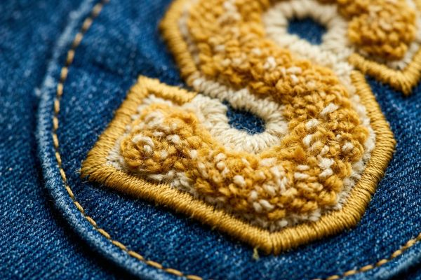

Chenille Patches: The Classic Varsity Look
Discover everything about chenille patches: varsity letter history, manufacturing process, design tips, and why they're perfect for schools, teams, and fashion brands seeking that classic, nostalgic look with premium tactile quality.

What Are Chenille Patches?
Chenille patches represent one of the most iconic and recognizable patch styles in history, characterized by their soft, fuzzy texture and bold, three-dimensional appearance. Chenille fabric has a long history, and the term "chenille" comes from the French word for "caterpillar," referring to the distinctive fuzzy texture that resembles caterpillar fur. These patches combine traditional embroidery with plush chenille yarn to create a look that's simultaneously nostalgic and timeless.
While most commonly associated with varsity letters on letterman jackets, chenille patches have evolved far beyond their athletic origins. Today, they're used by fashion brands, corporate teams, academic institutions, and anyone seeking a patch that conveys quality, tradition, and tactile appeal. The unique texture of chenille creates a sensory experience that printed or embroidered patches simply cannot match.

The Rich History of Varsity Letters
The story of chenille patches is intertwined with the history of American collegiate athletics and the tradition of varsity letterman jackets. The tradition began in the 1860s at Harvard University, where the baseball team first awarded a prominent crimson "H" to team members who participated in key games. This simple letter marked the birth of an enduring tradition that would spread across educational institutions and eventually into mainstream fashion.
By the 1890s, the letter sweater had emerged as a symbol of athletic achievement, with chenille becoming the material of choice for its ability to create bold, three-dimensional letters that stood out against dark wool fabrics. The 1930s saw the transition from sweaters to letterman jackets, typically made from wool with leather sleeves, creating the iconic look that remains popular today. These jackets became cherished keepsakes, representing years of dedication, teamwork, and school spirit.
Modern Renaissance of Chenille
While the varsity tradition remains strong, chenille patches have experienced a modern renaissance in recent years. Streetwear brands have embraced the nostalgic appeal of chenille, incorporating varsity-inspired designs into contemporary fashion collections. High-end fashion houses have also reimagined chenille patches, using them on luxury goods and runway pieces. This revival has introduced chenille to entirely new audiences who appreciate its tactile quality and timeless aesthetic.
How Chenille Patches Are Made
Creating quality chenille patches requires specialized materials, skilled craftsmanship, and attention to detail. The process combines traditional chenille techniques with modern manufacturing precision.
Materials Used in Chenille Patches
Quality chenille patches start with premium materials:
- Chenille Yarn: The heart of the patch, typically made from acrylic or a cotton-acrylic blend for softness and durability
- Felt Backing: Provides structure and stability to the patch, usually in a complementary color
- Embroidery Thread: Rayon or polyester thread for outlining and detailing
- Base Fabric: Typically a twill fabric that serves as the foundation
The Manufacturing Process
Creating chenille patches involves several specialized steps:
1. Design Preparation
The process begins with digitizing the design for chenille production. Unlike regular embroidery, chenille requires special programming to accommodate the unique properties of chenille yarn. Our design team carefully plans which elements will be chenille and which will be embroidered for optimal visual impact.
2. Base Layer Creation
A twill fabric base is prepared, and the felt backing is applied to provide structure. This foundation ensures the patch maintains its shape through years of use and washing.
3. Chenille Application
Specialized chenille machines apply the fuzzy yarn in dense loops, creating the distinctive texture. The yarn is stitched through both the felt and twill backing, ensuring secure attachment. This step requires precision to maintain consistent loop height and density across the design.
4. Embroidery Detailing
Once the chenille elements are in place, embroidery machines add outlines, lettering, and fine details using standard embroidery thread. This contrast between fuzzy chenille and smooth embroidery creates visual interest and definition.
5. Cutting and Finishing
The patches are precisely cut to shape, either with a hot knife for synthetic materials or laser cutting for ultimate precision. Any remaining loose fibers are carefully removed, and the patches undergo quality inspection to ensure every piece meets our standards.
Design Tips for Chenille Patches
Creating effective chenille patch designs requires understanding the material's unique characteristics and limitations. Here are our expert tips for achieving the best results:
Keep Designs Bold and Simple
Chenille works best with bold, simple shapes rather than intricate details. The fuzzy texture can obscure fine lines and small text, so focus on large, clear elements that will showcase the chenille texture to maximum effect. Block letters, simple shapes, and bold logos all work exceptionally well.
Size Considerations
Chenille patches need sufficient size to showcase their texture. As general guidelines:
- Varsity Letters: 4-8 inches tall for maximum impact
- Logos: Minimum 3 inches for chenille elements
- Text: Minimum 1 inch tall for chenille lettering
- Small Patches: Consider embroidery-only for designs under 2 inches
Color Selection
Chenille yarn is available in hundreds of colors, allowing for creative combinations:
- Traditional Varsity: School colors with high contrast for letter outlines
- Fashion Forward: Pastels, neons, and unexpected color combinations
- Classic: Navy, cardinal, forest green, gold, and white remain timeless
- Premium: Consider adding metallic embroidery outlines for luxury appeal
Combining Chenille with Embroidery
The most visually interesting chenille patches often combine chenille with standard embroidery:
- Main Element: Chenille for primary shapes and letters
- Outlines: Embroidery for crisp borders and definition
- Details: Embroidery for small text, dates, and intricate elements
- Layered Effects: Use both techniques to create depth and visual interest
Popular Applications for Chenille Patches
While varsity letters remain the classic application, chenille patches have expanded into numerous markets:
Educational Institutions
Schools and universities continue to be major users of chenille patches:
- Varsity Letters: The traditional application for athletic achievement
- Academic Recognition: Honor society, valedictorian, and scholastic achievement patches
- Club Patches: Debate team, robotics club, band, and other extracurricular activities
- Graduation Patches: Commemorative patches for graduating classes
- Mascot Patches: School mascots rendered in chenille for maximum spirit
Athletic Teams and Leagues
Beyond school athletics, chenille serves numerous sports organizations:
- Youth Leagues: Little League, Pop Warner, and youth soccer
- Adult Leagues: Softball, bowling, and recreational sports teams
- Special Olympics: Achievement recognition for athletes
- Championship Patches: Tournament winners and league champions
- Hall of Fame: Inductee recognition for sports organizations
Fashion and Apparel Brands
The fashion industry has embraced chenille for its nostalgic appeal and texture:
- Streetwear Brands: Using varsity-inspired designs for contemporary collections
- Luxury Fashion: High-end brands incorporating chenille on premium goods
- Denim Brands: Chenille patches on jeans and jackets
- Limited Editions: Special capsule collections featuring exclusive chenille designs
- Collaborations: Brand partnerships often feature chenille as a premium element
Corporate and Team Building
Companies have discovered chenille's potential for team building and recognition:
- Sales Awards: Recognizing top performers with chenille patches
- Service Milestones: 5-year, 10-year, and 25-year service recognition
- Corporate Teams: Department identification and team spirit
- Company Events: Conference and retreat commemorative patches
- Employee Engagement: Creating a sense of belonging and achievement
Ready to Create Your Custom Chenille Patches?
Our team specializes in bringing classic varsity tradition to modern applications. Get your free quote and digital proof today to see how chenille can elevate your brand or organization.
Get Free QuoteCare and Maintenance of Chenille Patches
Proper care ensures your chenille patches look great for years:
Washing Instructions
- Turn garments inside out before washing
- Use cold water and gentle cycle
- Mild detergent only - avoid bleach
- Line drying is preferred over machine drying
- If using dryer, use low heat setting
General Care Tips
- Avoid ironing directly on chenille - use a press cloth if necessary
- Store garments flat or on hangers to prevent crushing chenille
- Brush gently with a soft brush if needed
- Professional dry cleaning is safe for most chenille patches
- Address stains promptly - consult a professional for tough stains
Frequently Asked Questions
Are chenille patches more expensive than embroidered patches?
Chenille patches typically cost 30-50% more than standard embroidered patches due to the specialized materials, machinery, and labor required. However, many clients find the premium look and feel justifies the investment, especially for recognition items and fashion applications.
Can chenille patches be ironed on?
Yes! Chenille patches can be manufactured with iron-on backing, just like embroidered patches. However, due to their thickness, we recommend applying with a heat press for the most secure attachment, or taking extra time with a household iron and using a press cloth to protect the chenille texture.
What's the minimum order for chenille patches?
At ChinaPatchFactory, we have no minimum order requirement for chenille patches! Whether you need one single varsity letter for a personal project or thousands for your organization, we're happy to help. Volume discounts are available for larger quantities.
How long does it take to produce chenille patches?
Standard production time for chenille patches is 10-14 business days after proof approval, slightly longer than standard embroidery due to the specialized process. Rush production options are available for time-sensitive orders - contact us for details on expedited services.
Can small text be done in chenille?
Small text is generally not recommended in chenille, as the fuzzy texture can make it illegible. For text under 1 inch tall, we typically recommend using standard embroidery instead. We can combine chenille for main elements with embroidery for text to create the best of both worlds.
Conclusion
Chenille patches represent more than just a decoration - they embody tradition, achievement, and quality craftsmanship. From their origins in 19th-century collegiate athletics to their current status as a fashion staple and corporate recognition tool, chenille patches have proven their enduring appeal across generations and industries.
The unique tactile experience of chenille, combined with its bold visual presence, creates patches that people cherish and display with pride. Whether you're honoring athletic achievement, building school spirit, elevating your fashion brand, or recognizing corporate excellence, chenille patches offer a timeless solution that communicates quality and significance.
At ChinaPatchFactory, we've perfected the art of chenille patch manufacturing while honoring the tradition behind this iconic style. Our team combines modern technology with time-honored techniques to create chenille patches that meet the highest standards of quality and durability. Contact us today to discuss your chenille patch project and discover how we can help you create patches that will be treasured for years to come.